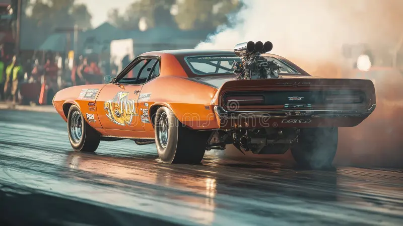

A arrancada é uma modalidade em que os veículos competem em um trecho reto, partindo de uma linha de largada. O objetivo é completar a distância determinada no menor tempo possível.
A reação na largada, a aderência dos pneus e a entrega de potência fazem diferença. Embora a prova seja curta, a preparação do carro e a concentração do piloto são fundamentais.
As regras, as distâncias e as categorias variam conforme o campeonato. Por isso, os resultados precisam ser comparados dentro do regulamento de cada competição.
Os veículos podem variar bastante. Alguns são baseados em carros de rua modificados, enquanto outros são construídos especialmente para competição. Os projetos mais extremos podem ter carrocerias, motores e sistemas de segurança muito diferentes dos carros comuns.
| Fator | Importância |
|---|---|
| Reação | O tempo entre o sinal e o início da partida. |
| Aderência | Ajuda a transferir a força do motor ao chão. |
| Potência | Influencia a aceleração do veículo. |
| Peso | Afeta a relação entre massa e desempenho. |
| Preparação | Ajuda a manter o conjunto funcionando corretamente. |
As provas devem ser realizadas em pistas apropriadas, com área de frenagem, barreiras, fiscalização e atendimento de emergência. O veículo precisa cumprir as exigências técnicas da categoria.
Disputar aceleração em avenidas ou ruas abertas coloca motoristas, pedestres e passageiros em risco. Para sentir a emoção da arrancada, o caminho correto é participar de eventos autorizados.